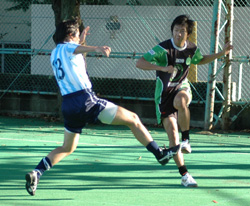
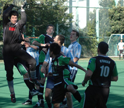
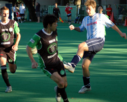

|
St Mary's, Sat 7th Oct. It was a perfect day Saturday on the million-dollar pitch at St. Mary's and the TML's top two squads were up for it. Plenty of drama here - last year the Hibs won the war but lost the battle, as YCAC was the only team we didn't beat.
The teams have very different styles, with YCAC's shock and awe devastation through long balls and crosses versus the Hibs quick passing and Yama's custom-made gold shoes. Both teams were missing key midfielders, with Anthony Savage from YCAC off due to a red card and Bevan "bicycling in Chiba."
From the opening whistle it was all YCAC, as they relentlessly hounded the Hibs on defense and put long ball after long ball through to their two bulky forwards on the attack. The Hibs defense held at first, but was forced into giving up multiple corner kicks - not good when the bad guys are all tall and scary like YCAC. Eventually their pressure paid off and when they slipped a ball in near post off a corner, the Hibs gave up their 3rd goal of the season and it was 1-0 YCAC.
As the half wore on, YCAC created a few more chances, but eventually their hard-charging style began to tire them out. The Hibs were able to find more space to move the ball around, and after several close calls won a corner just before half-time. Yasu whipped a great cross in, and Tomo slipped in among the giants to tuck it away, score tied 1-1. On a sour note Steve suffered a head injury and was unable to return to the game.
The second half was a whole different story, as the Hibs shook off their poor play and began to fight back. We started to win more headers and negate the YCAC air force, and were able to get the ball wider and string some passes together. Eventually we reaped the rewards as some bad shooting/great passing from Yohei led to another great finish from Tomo (the same Tomo that scored the first goal), and then Yasu poured in from wide right to finish strongly after a string of missed chances by Hibs players. 3-1 Hibs.
The last goal was a beauty as Tomo (the same Tomo that had already scored two goals) got the ball wide left in the box with his back to the goal, turned calmy and slotted the ball just inside the right post past the stunned YCAC keeper to cap the hat trick. Hats off also to Ike, who anchored the Hibs all day against the aerial bombardment with his best performance of the year, and to Ricky the ref, who called a great game and kept tempers under control.
Report – Jay Alabaster.
|